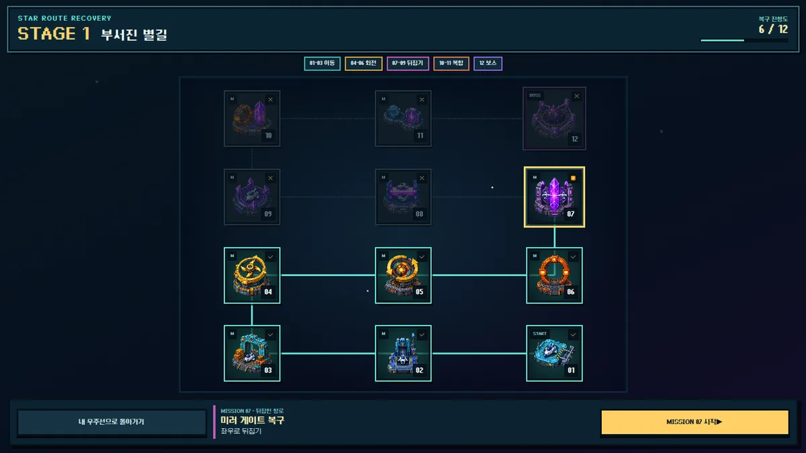
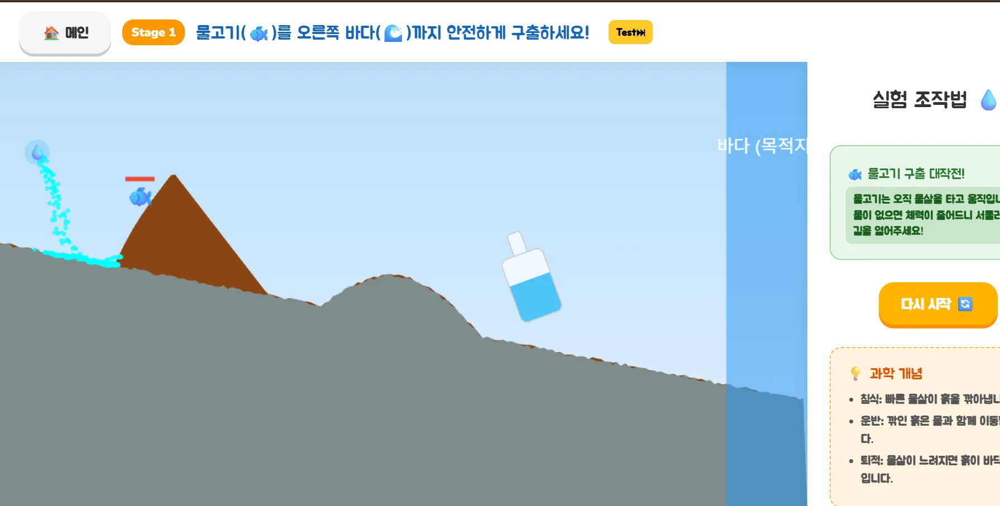
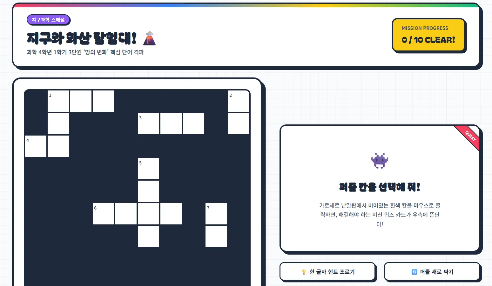

교실의 아이디어를, 직접 해보는 배움으로
초등교사가 만드는
교육 소프트웨어
DLDCOM은 한국의 초등교사가 직접 개발하는 독립 교육 소프트웨어 프로젝트입니다. 학생이 개념을 조작하고 탐색하며 배울 수 있도록 웹 기반 학습 게임과 시뮬레이션을 만듭니다.
2026년 5월 개발을 시작했으며, 교사 커뮤니티 인디스쿨에 공유해 교사들이 교육자료로 활용했습니다.
학습 게임 둘러보기 →현재 공개 중인 제품
직접 실행해 볼 수 있는 학습 도구
포털에서 학년과 과목에 따라 게임을 찾을 수 있습니다. 아래는 공개된 게임 중 세 가지입니다.


앞으로 탐색할 방향
교사의 검토를 중심에 둔 AI 활용
다음 개발 방향으로 Claude API를 활용한 학습 문항과 수업자료 초안 생성을 검토하고 있습니다. 교사가 결과를 수정하고 확인한 뒤 사용하는 흐름을 목표로 합니다.
이 기능은 개발 구상 단계이며, 현재 제공되는 게임 포털의 기능은 아닙니다.
About DLDCOM
Educational software built by an educator
DLDCOM is an independent educational software project developed by an elementary school teacher in South Korea. It builds browser-based learning games and simulations for elementary education, with a public portal organized by grade and subject.
The project began in May 2026 and has been shared on Indischool, a Korean teacher community, where teachers have used its educational materials.
Public projects include Broken Star Route, a game about translating, rotating, and reflecting shapes; River of Life, a simulation of erosion, transport, and deposition; and a Korean vocabulary crossword game.
We are exploring Claude API integration for drafting learning questions and teaching materials, with teachers reviewing and editing the output before use. This is a planned direction, not a feature currently offered by the portal.
개발 기록과 연락
소스 코드와 공개 개발 기록은 GitHub에서 확인할 수 있습니다.